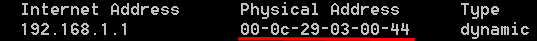

ARP Poisoning
1. Select the Targets of the attack
First we have to select the target(s) of our attack from which will intercept the traffic.
In the example below we want intercept the traffic from the target and the router in the network.
If we do not select a target Ettercap will automatically set all the hosts in the target list. This will force our machine(MitM) to process a lot of traffic. If our machine or the network can not handle this amount of traffic, a DoS of the network could occur.
2. MitM ARP Poisoning attack
Clicking on the MitM menu we can select the the type of attack to run
Find MAC address of our MitM machine
ifconfig #Linux MitM machine

After the ARP Poisoning the gateway MAC address is our MAC address(MitM machine)
arp -a #Windows target machine
before:
after:
